Автор
Карина Манукян
в сети
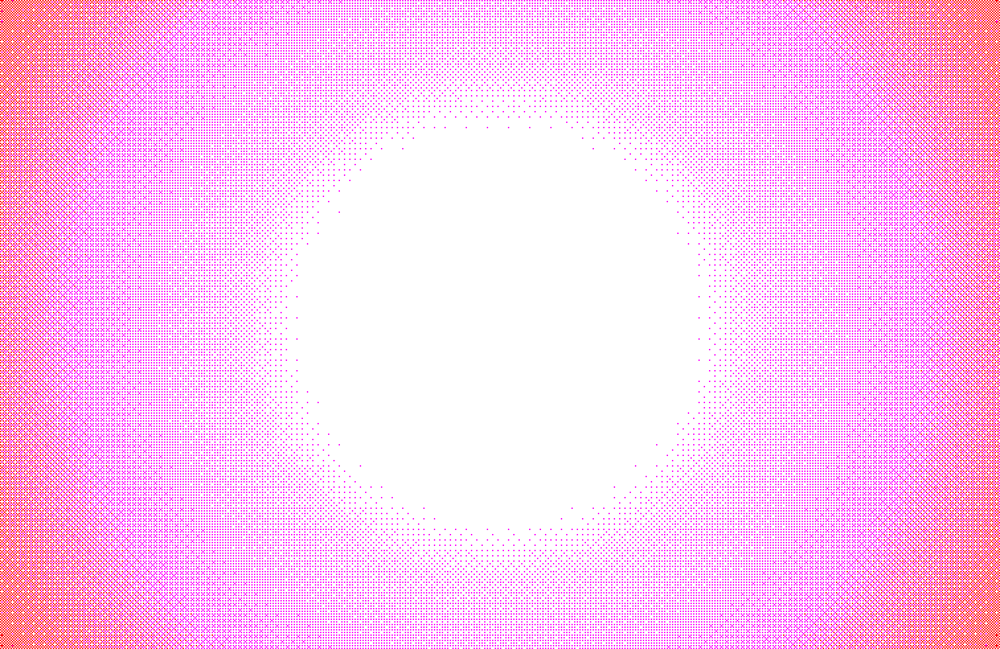
Идет загрузка...
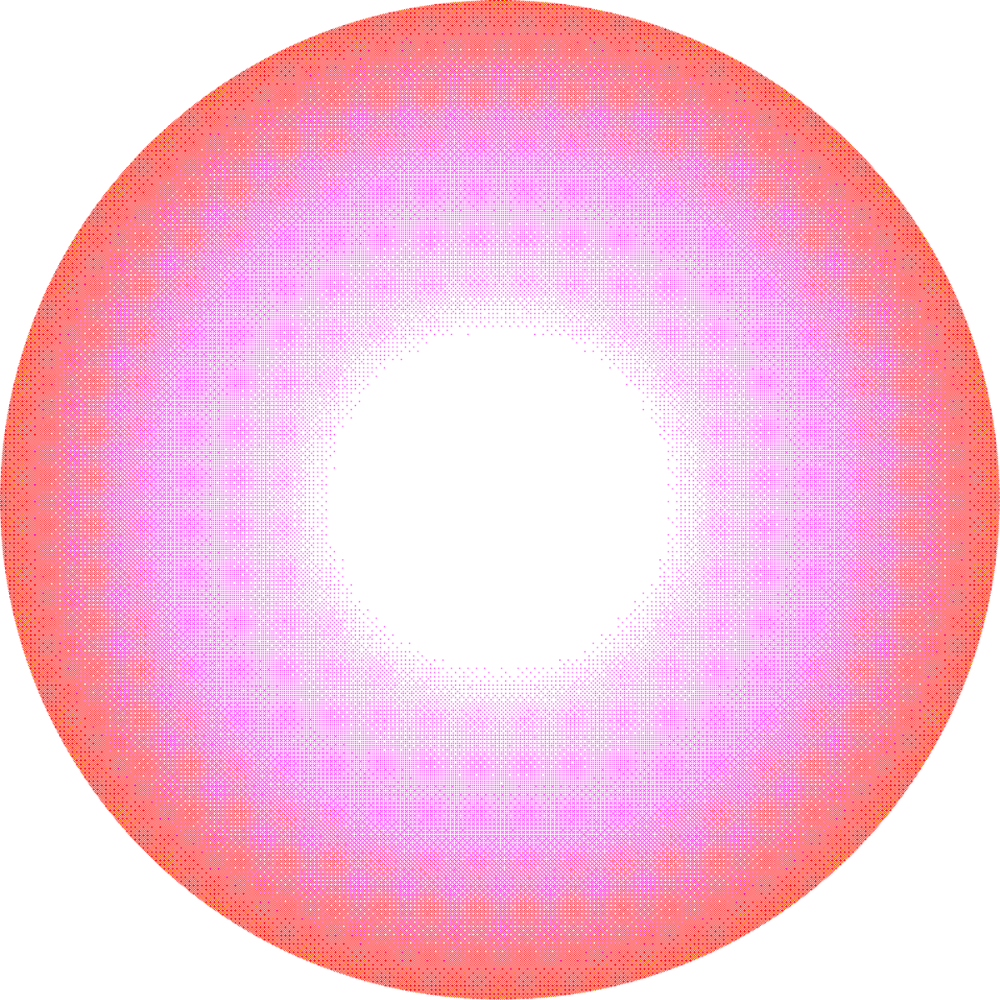
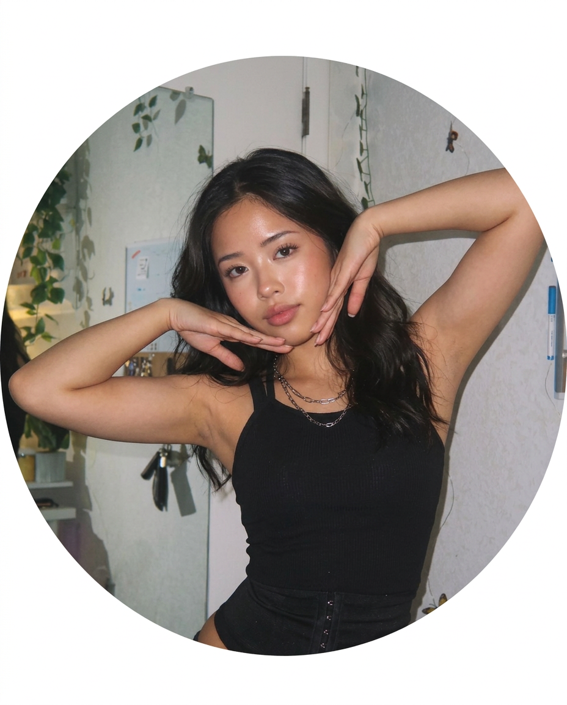
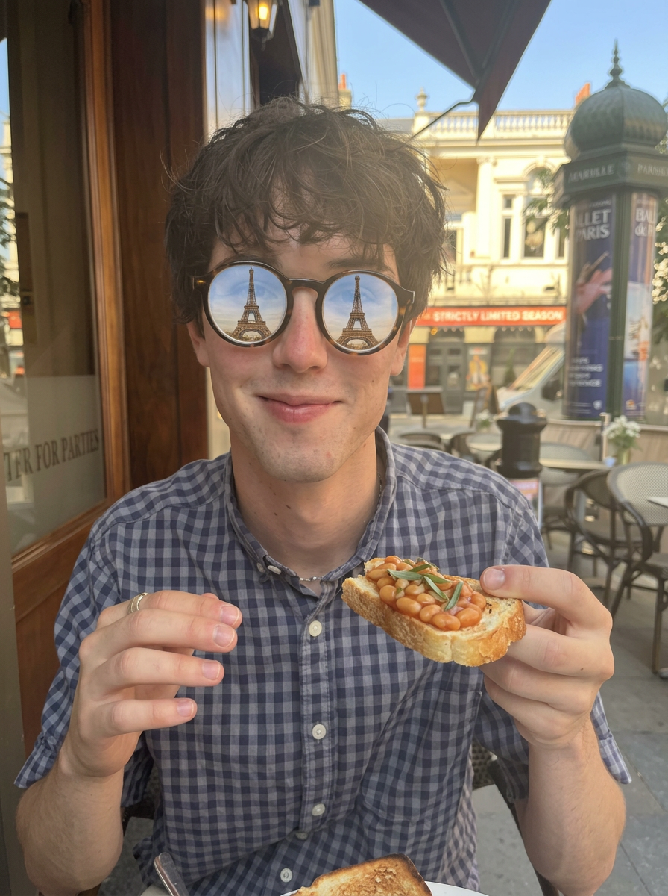
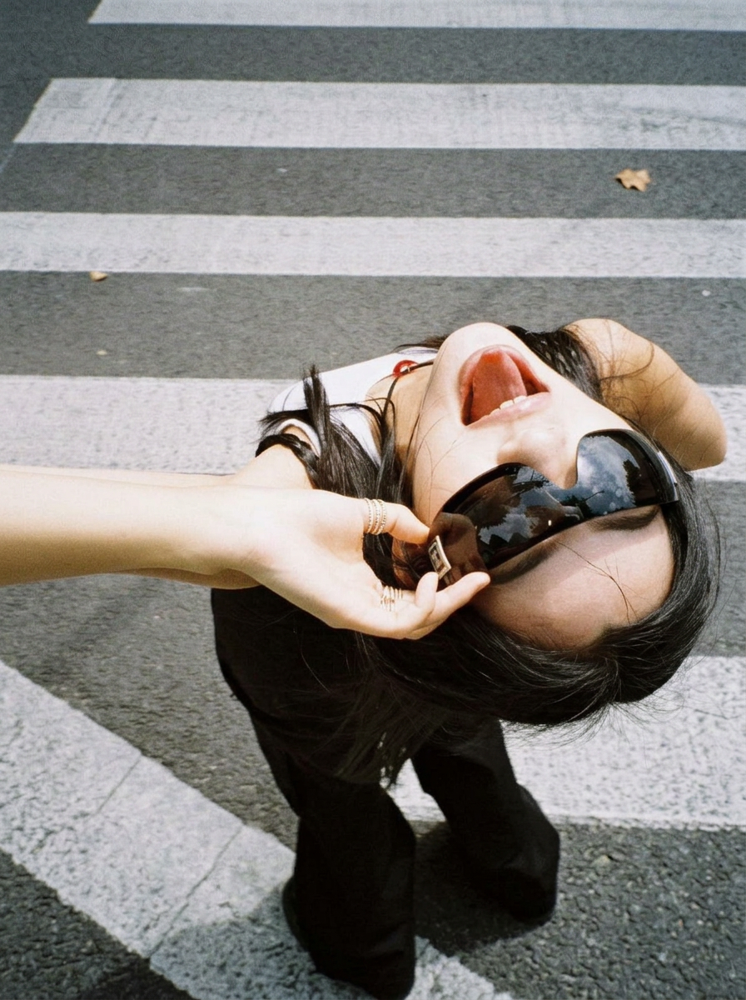
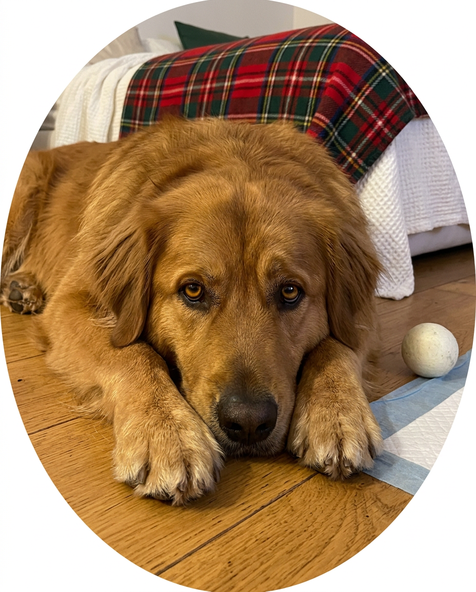
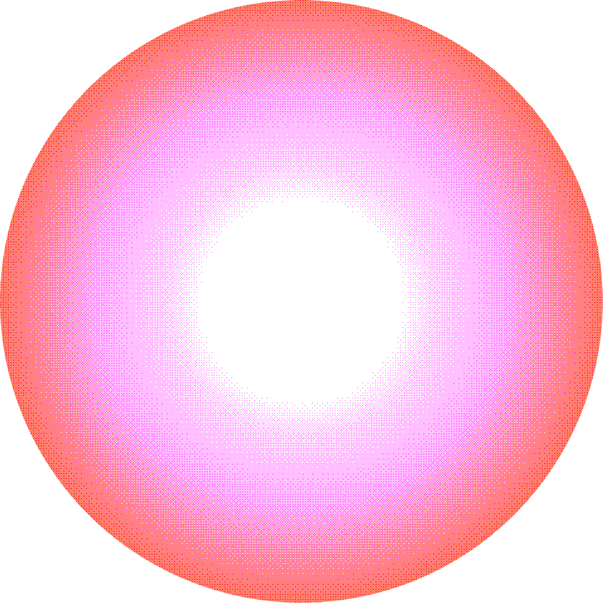
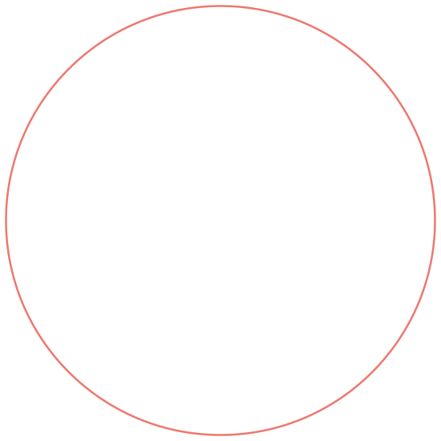
Как вы прочитали это «ладно»?
Когда мы читаем чужие сообщения, мы часто опираемся на собственные привычки. Представляем, с какой интонацией сами произнесли бы эти слова и в каком настроении их написали.
Что бы вы имели в виду?
Но Аня может вкладывать в «ладно» совсем другой смысл. Возможно, вы только что прочитали в её сообщении собственную интонацию.
И пытаемся по ним понять человека, которого сейчас не видим
Хотя фотографию могли сделать год назад
Возможно, сегодня Аня устала, расстроена или вообще сидит с совершенно другим выражением лица
+7 ••• ••• •• ••
не в контактах
Аня
● в сети
Слова не изменились, но теперь ты знаешь, кто их написал
Фотография напоминает знакомого человека. Имя связывает новый вопрос с предыдущими разговорами.
В психологии цифровой коммуникации существует понятие социального присутствия —
В более поздних исследованиях различают осознание присутствия другого и ощущение близости с ним
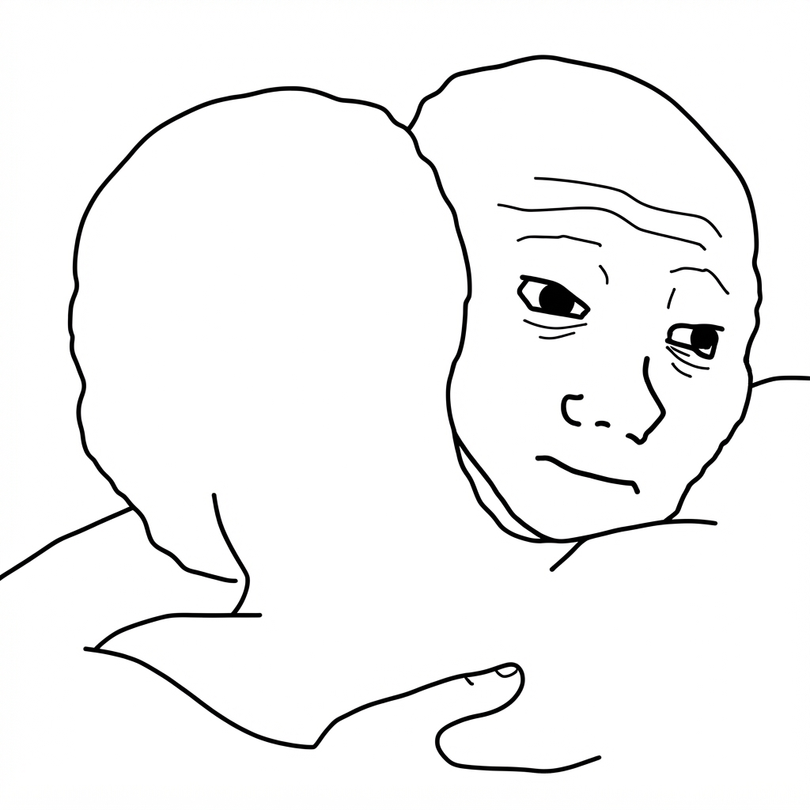
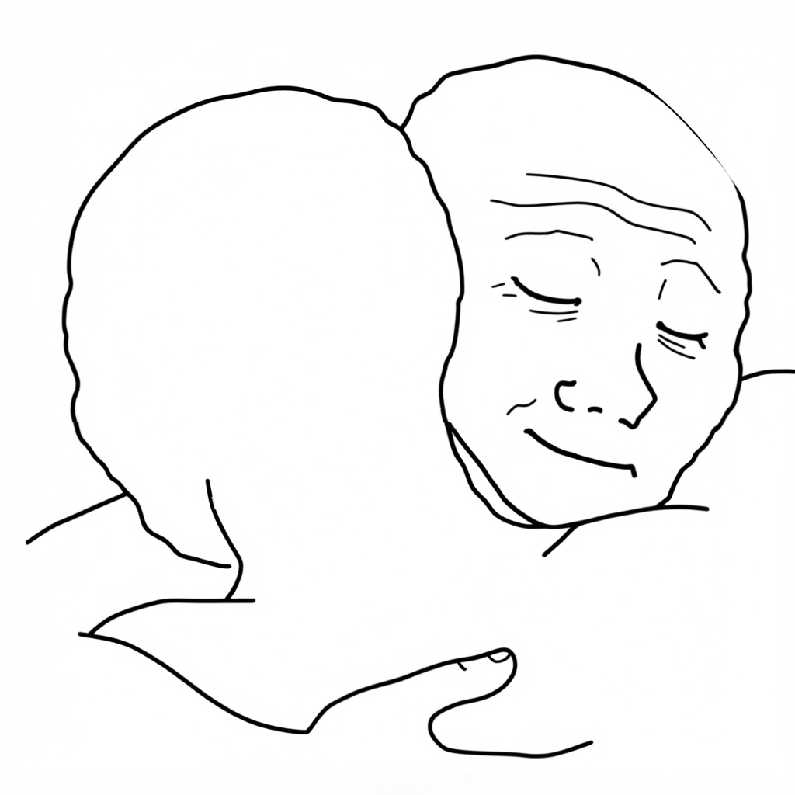
Теперь видно, где чья реплика. Дизайнер определил, как различать участников, а Лёша и Аня наполняют это пространство своим разговором.
Ты завтра точно придёшь?
ладно
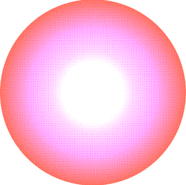
Здесь — условные реплики. Дизайнер не знает, что чувствуют люди, но его решения определяют, как их разговор будет выглядеть на экране
Ты дома?
Да, уже дома
ладно
Спасибо, что написал
Как прошёл день?
Хорошо
Но есть ещё кое-кто, кто может изменить этот экран
На этом условном примере посмотрим, как Лёша может изменить оформление чата
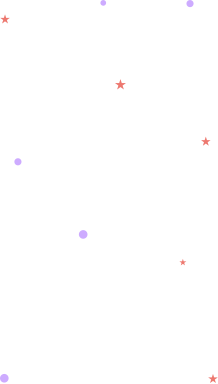
Оформление чата
Но в каком из этих чатов оно кажется вам теплее? А в каком — серьёзнее?
Аня не выбирала фон на телефоне Лёши. Не добавляла сердечко к своему имени и не перекрашивала пузырьки.
И теперь привычное оформление может влиять на то, с каким настроением он читает её слова
Получается любопытная вещь: мы пытаемся понять другого человека через экран, который отчасти настроили под себя


Теперь смотрим на экран Ани: пришло сообщение Лёши. Интерфейс делает заметным действие за пределами её экрана
Каждое изменение может оказаться следом чужого действия
В UX-дизайне есть принцип видимости состояния системы —
отправлено
доставлено
новое сообщение
печатает…
Якоб Нильсен описывает его как необходимость вовремя сообщать пользователю о происходящем с помощью понятной обратной связи.
печатает…
Тела нет. Галочка сообщает, что сообщение отправлено. Но мы не знаем, что Лёша делает сейчас. Он мог уже убрать телефон в карман.
Тело есть! И вдруг за экраном словно появляется человек.
Мы представляем Лёшу с телефоном в руках. Возможно, он подбирает слова, ошибается, стирает и начинает заново.
Хотя не видим ни его рук, ни лица
А «печатает…» заставляет почувствовать присутствие отправителя прямо сейчас

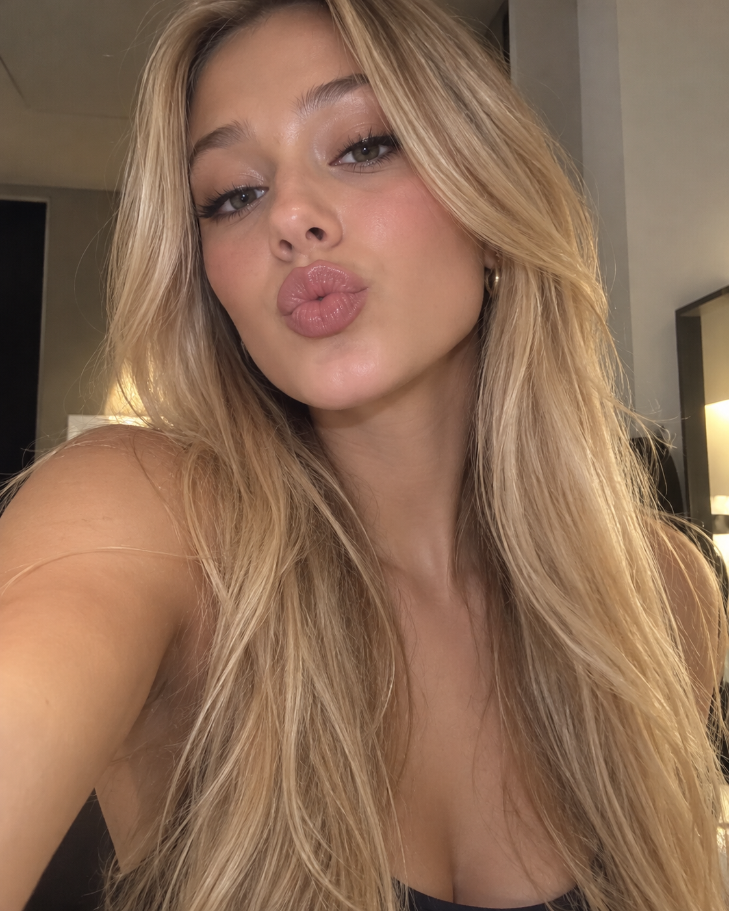
аня печатает ••• 0:07
0:07Мы замечаем присутствие человека — и пытаемся понять его настроение. В 2021 году в журнале Emotion вышло исследование Emojis as Social Information in Digital Communication, включавшее 11 экспериментов
Авторы обнаружили, что эмодзи могут менять эмоциональную окраску сообщения. Это подсказка для интерпретации, а не доступ к чувствам человека
Хорошо❤️
это сарказм?
ты обиделась?
тебе понравилось?
ты шутишь?
ты серьёзно?
ты злишься?
всё хорошо?
что ты имеешь в виду?
Как на знак тире —
Что на тайный знак
Брови вздрагивают —
Заподазриваешь?
Марина Цветаева, «В седину — висок…», 1925
У Цветаевой тире передаёт больше, чем грамматическую паузу
до завтра —
до завтра )
до завтра )))
Это аналогия, а не история происхождения скобок: в переписке знаки тоже помогают искать интонацию
В 2018 году Олег Пащенко предложил подписчикам социальной сети сравнить, как они понимают закрывающие скобки.
Он предложил свою шкалу улыбок.
В комментариях появились несовпадающие версии: для одного человека ) — простая улыбка, для другого — холодная вежливость; длинная цепочка скобок могла означать смех или насмешку.
)))
Выберите вариант, чтобы увидеть, как этот знак читали другие.
Завтра в семь, как договаривались?
Условный пример: Лёша пишет Ане и стирает скобку перед отправкой
На экране Лёши — ещё не отправленный черновик
На экране Ани — только отправленный вариант
Удалённую скобку Аня не увидит
В обычном тексте точка завершает предложение. В чате границы сообщения уже показывают, где заканчивается реплика.
Хорошо
Хорошо.
В эксперименте 2016 года участники оценивали короткие английские ответы с точкой как менее искренние, чем те же ответы без неё. Когда фразы показывали как рукописные записки, такой разницы не обнаружили.
Это не значит, что точка всегда выражает холодность.
Восприятие зависит от среды и от того, как обычно пишет собеседник.
До этого «ладно» уже был разговор. Вернёмся к тому, что ему предшествовало.
Лёша и Аня две недели пытаются встретиться. Ане несколько раз приходилось переносить планы из-за работы
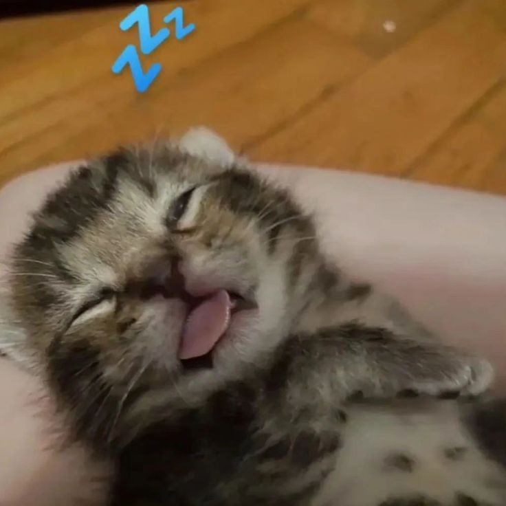
Лёша увидел насмешку.
Аня объяснила стикер усталостью

Вера, близкая подруга
Лёша
Руководитель
Для Веры это знакомая шутка. Для Лёши — часть неприятного разговора.
Руководитель не понимает, какой ответ получил.
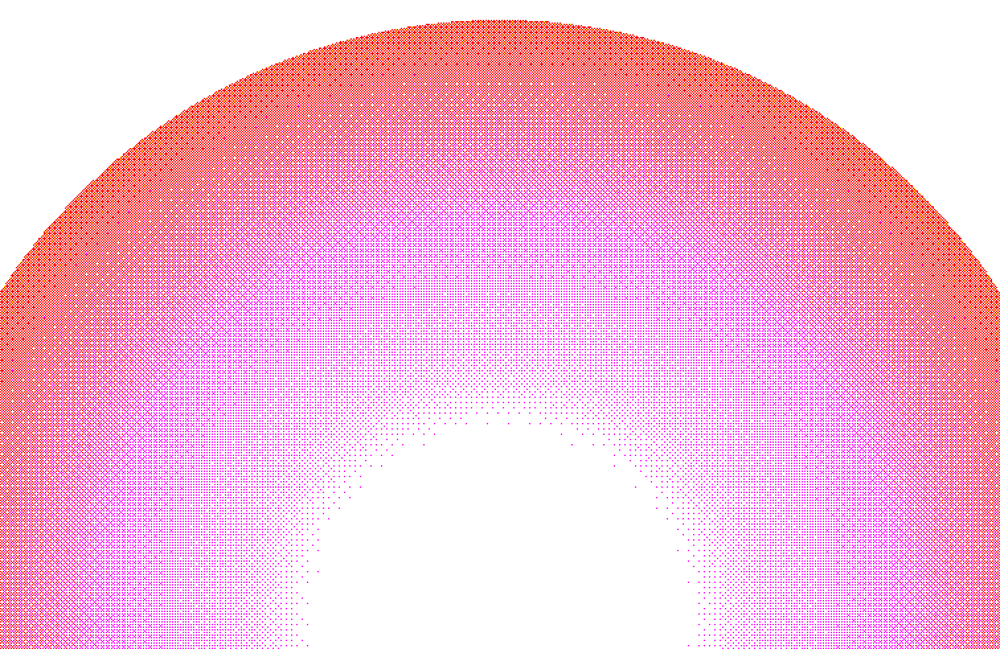
Исследователи недопонимания стикеров в 2018 году связывали ошибки восприятия и с неоднозначностью картинки, и с контекстом разговора
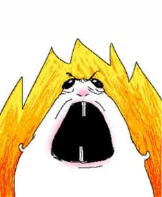
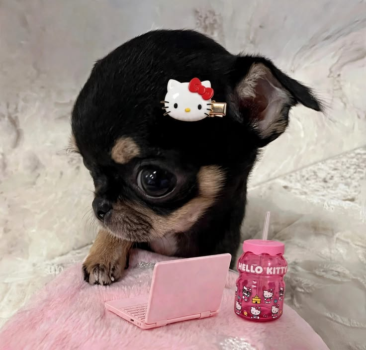
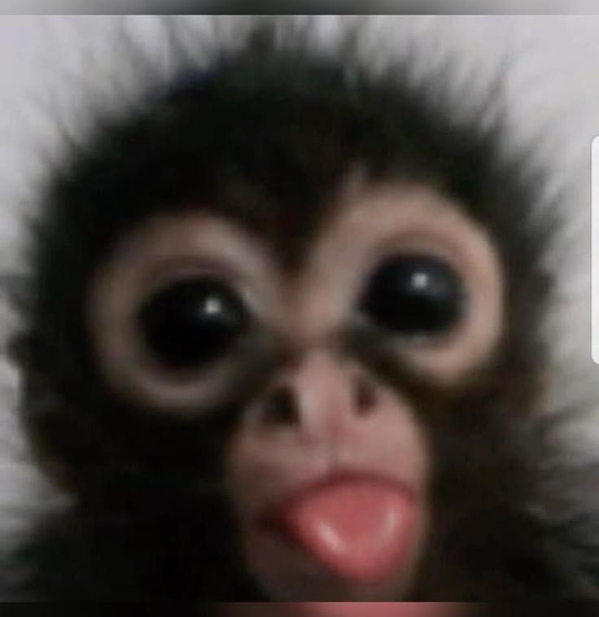
Дизайнер может показать стикер рядом с нужной репликой. Но не может сделать его значение одинаковым для всех.


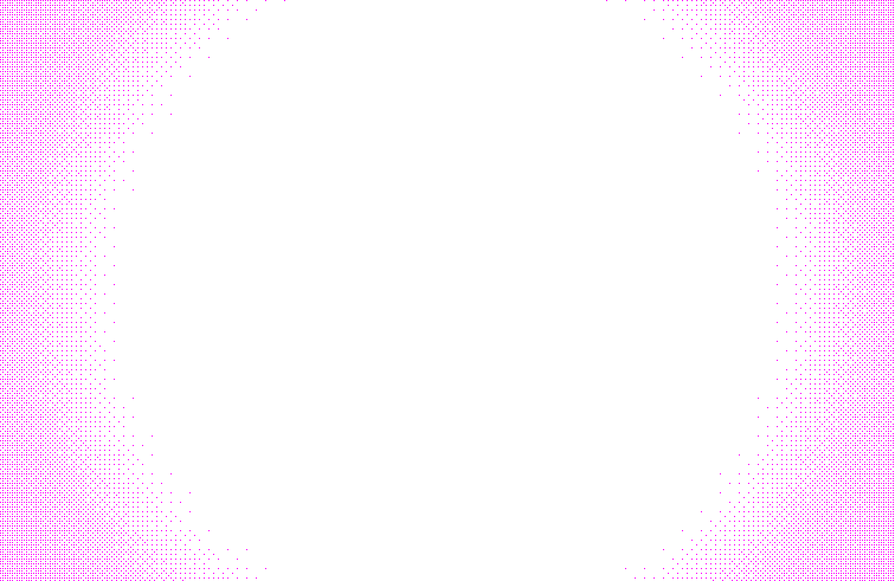

Аня снова не может точно сказать, когда они встретятся
Лёша скучает по ней. Но каждый перенесённый вечер заставляет его сомневаться, так ли сильно она хочет его видеть.
Ему кажется, что он один пытается сохранить их близость
А её короткое «ладно» звучит почти безразлично
Она правда хотела встретиться с Лёшей. Просто завтра её опять могут задержать на работе.

Когда он спросил: «Ты вообще хочешь меня видеть?», ей стало обидно
Она пыталась объяснить, почему переносит встречу. А Лёша будто услышал только то, что она снова не придёт.
Она долго смотрит на экран. Хочет ответить, но не знает, как объяснить всё ещё раз.
ладно
Рядом — короткое «ладно»
Лёша знает про смену. Он видел стикер и паузу в ответе. А вот этих возможных черновиков он не видел.
Лёша
«Она меня больше не любит»
Аня
«Он мне не верит»
Девять статусов за вечер, и ни один не ответил на «ты как?»
В исследовании 2019 года изучали давление постоянной доступности и его возможные негативные последствия для пользователей смартфонов
Это не доказательство того, что давление создают именно галочки. Но статусы могут становиться частью ожиданий между людьми.
Перед дизайнером возникает задача, у которой нет готового решения:
Конфиденциальность
В Signal можно отключить индикаторы набора и отчёты о прочтении
Если выключить индикаторы набора, другие не увидят, что вы печатаете, но и вы перестанете видеть их индикаторы
Измените настройки видимости
Ты завтра точно придёшь? ✓✓
Увидимся завтра)))
в сети
Нет, это я после смены
)))
Вы ещё здесь?
Конфиденциальность
Одни правила задаёт интерфейс: какие действия будут видны и когда
Другие складываются между людьми: что означает скобка, какой стикер связан с общей шуткой, сколько времени обычно ждут ответа
Автор
Карина Манукян
в сети
Куратор
Олег Пащенко
тоже в сети
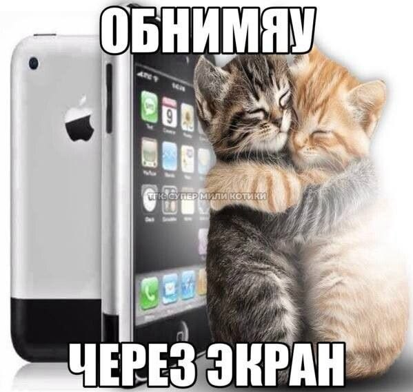

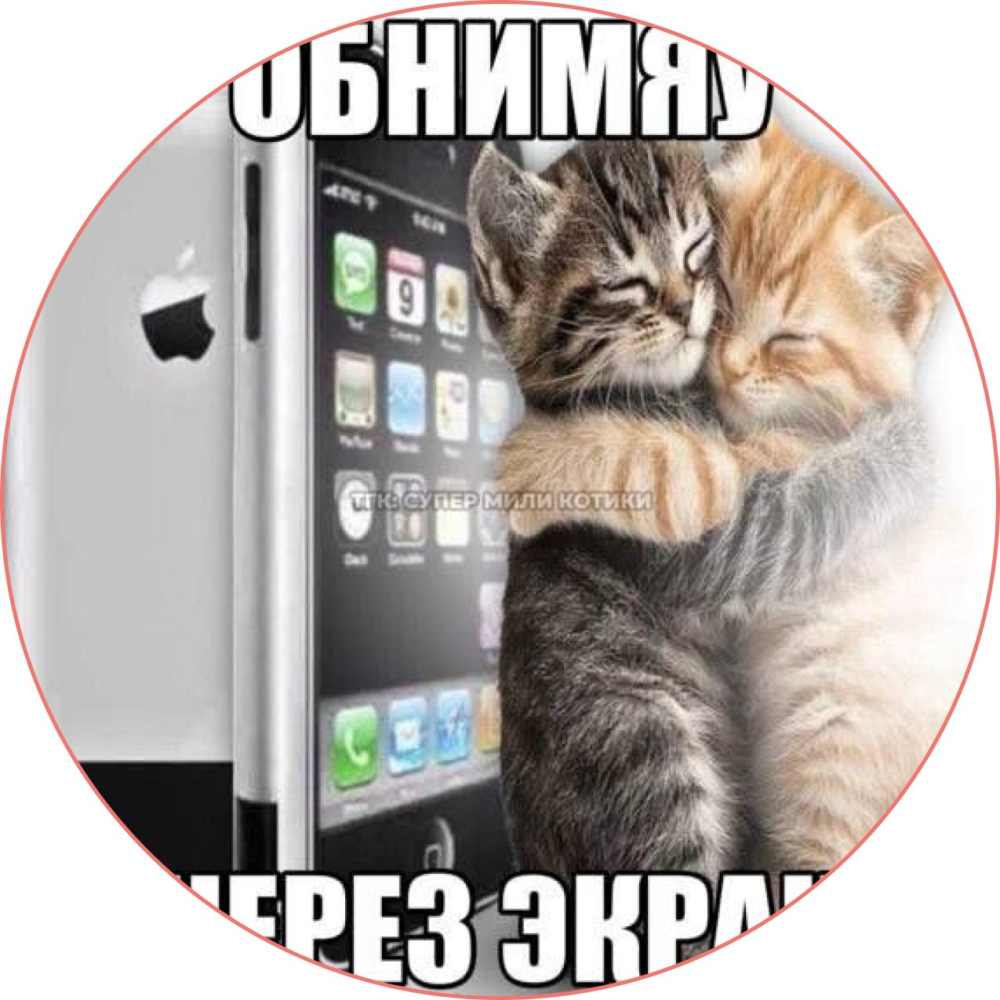
Лёша, Аня и рассказчица — вымышленные персонажи. Чаты и интерактивы — демонстрационная модель, а не копия конкретного приложения.
Примеры скобок показывают разные возможные прочтения, а не общепринятый «словарь» эмоций. Выборы читателя не являются результатами психологического эксперимента.
Марина Цветаева. «В седину — висок…» (22 января 1925)
Олег Пащенко. Публикация «Сверим часы» и обсуждение значений скобок (14 июля 2018). Основано на скриншотах, предоставленных для проекта;
Short J., Williams E., Christie B. The Social Psychology of Telecommunications (1976)
Kreijns K., Xu K., Weidlich J. Social Presence: Conceptualization and Measurement (2022, онлайн в 2021)
Nielsen J. Visibility of System Status
Scott Fahlman. История первого :-) (1982)
Gunraj D. et al. Texting Insincerely: The Role of the Period in Text Messaging (2016)
Miller H. et al. “Blissfully Happy” or “Ready to Fight”: Varying Interpretations of Emoji (конференция 2016)
Cha Y. et al. Complex and Ambiguous: Understanding Sticker Misinterpretations in Instant Messaging (2018)
Halfmann A., Rieger D. Permanently on Call (2019)
Signal Support. Typing Indicators
Signal Support. Read Receipts